The Inspector panel in Gravit Designer includes a color picker to help you choose and manage colors.
To change color, you click the colored circle beside the eyedropper icon in the Inspector panel.
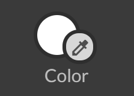
The pop-up Color Picker will appear to let you choose different fill options, such as colors, gradients, and textures.
 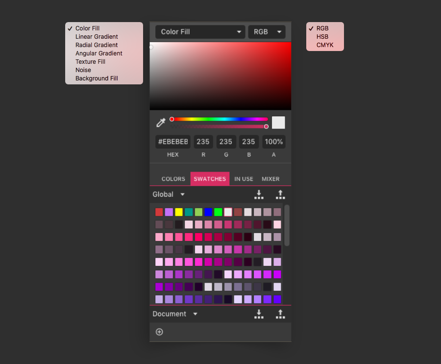
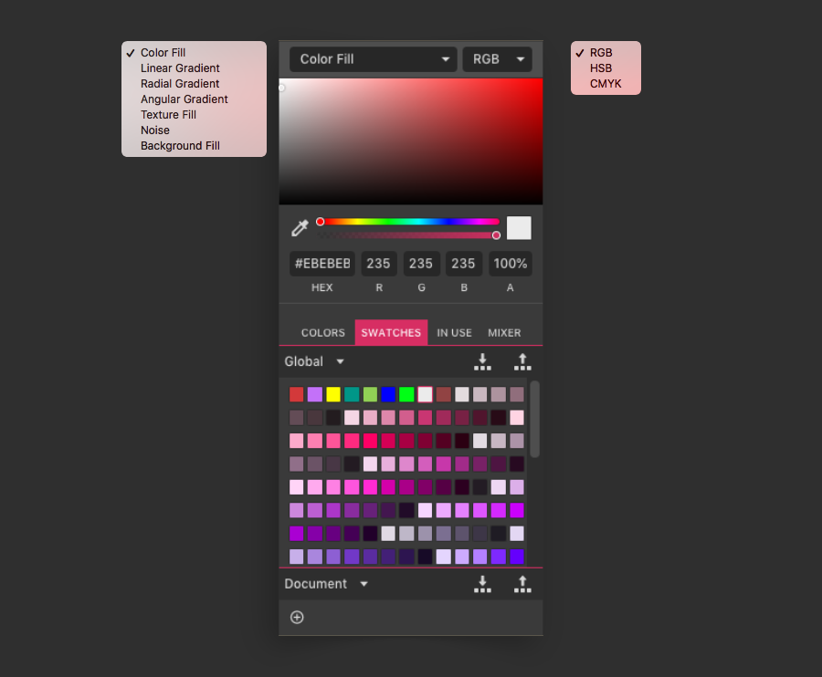
Color models (RGB, HSB, CMYK)
Gravit Designer supports three color spaces – RGB, HSB, and CMYK.
RGB – uses R, G, B components to define the amounts of Red, Green, and Blue light in a color. It is suitable for designs that will be viewed onscreen. RGB is an additive color model. Learn more about RGB here.
HSB – uses H, S, B, components to define the Hue, Saturation, and Brightness of the color. HSB allows for more intuitive modification of color components than RGB. This color model is also used mostly for onscreen images. Learn more about HSB.
CMYK – uses C, M, Y, K components to define the Cyan, Magenta, Yellow, and Key (Black) of colors. CMYK is widely used in the print industry. This is a subtractive color model. Learn more about CMYK.
You can change the color mode of the document between RGB, HSB, or CMYK as a general setting at the bottom of the inspector panel:
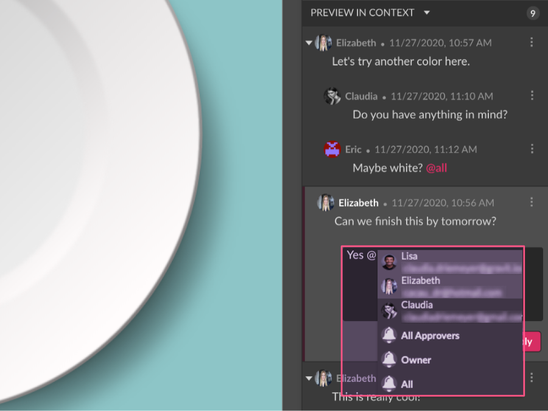
You can also change the mode for each element individually on the Color Picker.
Solid colors
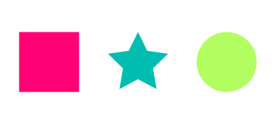
Color Fill is the default option on the Color Picker. The object will be filled with a single solid (flat) color.
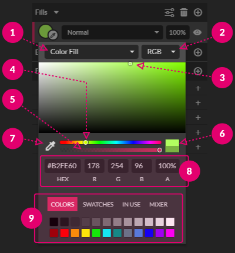
To choose a color, make sure that the selector (1) is set at Color Fill. Move the small dot (3) in the main pick area to choose the desired color. While dragging the color selector dot, you can preview the color difference with the current color applied in the small color-swatch (6). You can change the hue of the main Color Picker area with the hue slider (4). You can change how transparent the color will be with the Opacity slider (5).
Alternatively, you can change values directly in the fields (8) or choose predefined colors from pallets (9).
You can also sample a color from anywhere on the canvas by clicking the Eyedropper icon (7).
You can change the color mode to RGB, HSB, or CMYK in the selector at the top right corner of the popover (2).
Linear gradients
You can use a simple gradient between two colors, or add in multiple color points for a rainbow-like multi-color effect.
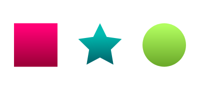
In the Color Picker, choose Linear Gradient from the selector.
To add a gradient stop point, click somewhere on the gradient bar at the top of the pop-up Color Picker.
To move the color stop point, drag it to the left or to the right.
To delete a gradient stop point, drag it off the gradient bar.
To change the color/opacity of a gradient stop point, click the stop point to select it. Then change the color/opacity within the Color Picker.
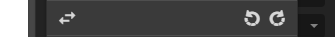
To reverse the gradient, change the order of stops.
You can also rotate the gradient to the left and to the right (45 degrees). The default gradient is created horizontally. These controls change it to a 45-degree gradient in a single click, and a vertical gradient in two clicks.
Alternatively, you can move the end handles of the gradient, and gradient color “stop points” interactively within the object. You can also rotate gradients interactively. Hold to constrain to 45 degree angles.

Radial (Elliptical) gradients
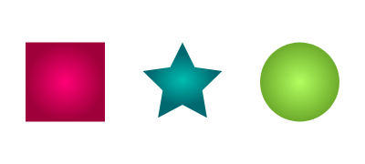
You can use the radial gradient in Gravit Designer to create objects with creative color effects. Radial gradients have a circular, light to dark shape.
You can add, remove, reverse, or change gradient stop points in the same way as linear gradients (see above).
By default, the two gradient handles start from the center of the object and extend to its ends. At any point, there is only one active handle. It is white and all color stops are displayed on it. The other (inactive) handle will be represented as a thin blue line.
You can adjust handles interactively to achieve different effects. You can also move handles inside or outside the shape.
You can adjust the gradient center by moving the inactive (blue) handle. This can produce some interesting dome effects. The center cannot move outside the ellipse indicated by the other handles.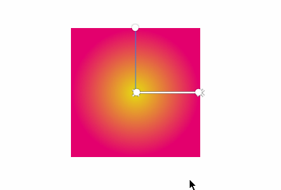
Angular gradients

Angular gradients produce a circular, sweeping color effect, similar to a DVD surface.
You can add, remove, reverse, or change gradient stop points in the same way as linear gradients (see above).
The handle at the center of the gradient lets you position the the angular sweep.
The handles for the gradient start and end points lets you change the angle of the gradient.
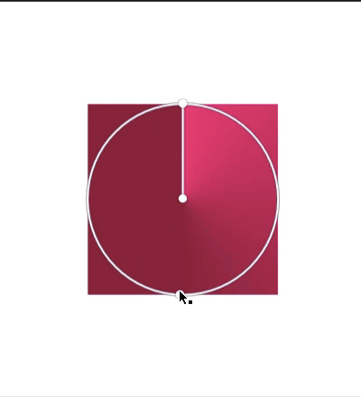
Texture fills
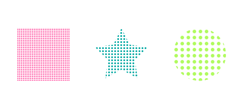You can use texture fills to produce a variety of effects. While images are often used for textures, Gravit Designer also supports any object as a texture source.
When you select Texture Fill from the Fill type selector, you will be presented with the following interface:
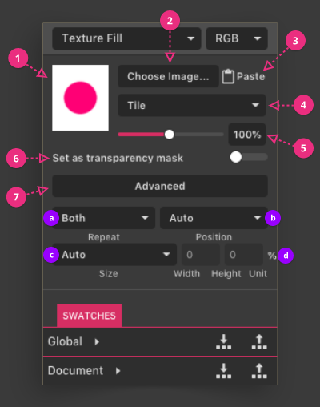
(1) Image preview
(2) Choose Image – lets you browse local computer storage
(3) Paste an image from the clipboard, which is useful for copying from an image viewer or website (as well as any object in Gravit Designer)
(4) Tile – lets you define how the image fits into the shape’s bounding box
- Fill – zoom to fill shape bounding box, crop off any parts that do not fit
- Fit – fit image within the shape bounding box, do not fill parts that are not covered by the image
- Stretch – fit image within the shape’s bounding box, distort to fit the whole image
- Tile – defined by the Advanced settings (see below).
(5) Zoom image size – 10% minimum, 200% maximum. Zoom image is active only in Tile mode.
(6) Set as transparency mask – use the alpha/transparency in the (PNG) texture image as a mask. This is useful if you have used two or more layered fills for the shape.
(7) Advanced – closely resembles the CSS background model, which is ideal for web development
(a) Repeat: Both, Horizontal, Vertical, None – defines how the image repeats in a tiled effect
(b) Position: Auto, Top, Left, Center, Right, Bottom – defines how the image is positioned in relation to the shape
(c) Size: Auto, Contain, Cover, Percent, Length – defines how much of the shape is covered by the image
(d) Width, Height, Unit – resizes the image by measurements rather than a size percentage
Fill preset
- Repeat – None; Position – Center; Size – Cover
Fit preset
- Repeat – None; Position – Center; Size – Contain
Stretch preset
- Repeat – None; Position – Center; Size – 100%
Tile preset
- Repeat – Both; Position – Auto; Size – Auto
Tile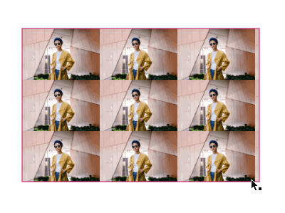
An example of a texture fill with the Tile preset applied. The texture will repeat horizontally and vertically. You can change the size of tiles in the pop-up Color Picker.
Fill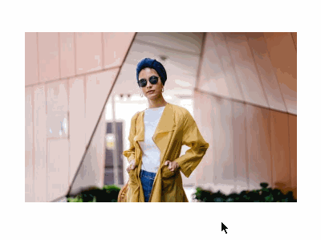
An example of a texture fill with the Fill preset applied. The texture fill will cover the entire object, which is useful for responsive UI design. The result is similar to CSS background-size: cover.
Fit
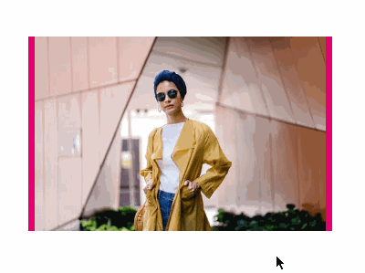
An example of a texture fill with the Fit preset applied. The texture will fully fit inside the object and will be completely visible if the object is resized. The result is similar to CSS background-size: contain.
Note: The pink was added for clarity.
Stretch
An example of a texture fill with the Stretch preset applied. The texture will stretch with the object, which lead to distortion of the texture.
Noise fills
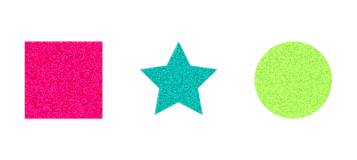
A noise fill adds random (black/white or color) pixels to an object, producing an effect similar to grain textures such as speckles or sand.
There are several types of noise fills:
- Original – adds transparent pixels, so the objects or fills behind the object are visible
- Black – adds black pixels on white background
- White – adds white pixels on black background
- Color – adds random colored pixels
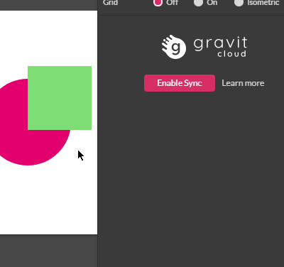
Noise is often used as a second fill layer, with transparency or blending to add subtle grain to a shape.
Here are some examples of a noise fill:
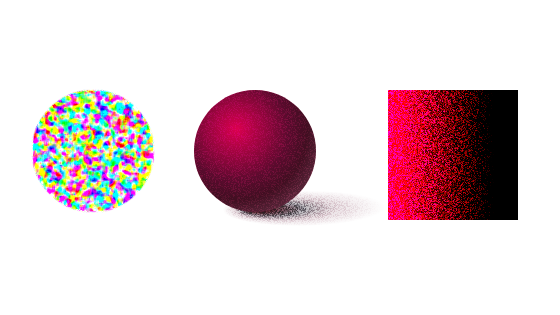
Background fills
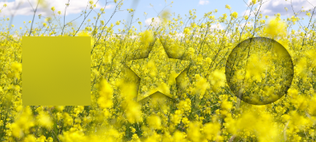
You can use a background fill to create objects that appear transparent. You can apply background fills non-destructively.
For example, you can quickly change the hue or contrast of the whole page by making a rectangle to cover all other objects. Then you can apply a background fill and add a color adjust effect to the rectangle.
You can also produce a dynamic background blur by making a rectangle with a background fill, adding a blur effect, and enabling the clip option. The result is that everything that is underneath this rectangle will be blurred.
In addition, you can quickly hide sensitive information from a screenshot by placing a rectangle to cover the portion you want to hide, and then adding a blur or hexagon effect.
You can create a DIY liquified effect by creating a circular object with a bulge effect.
You can also use background fills to make color adjustments to parts of an image.